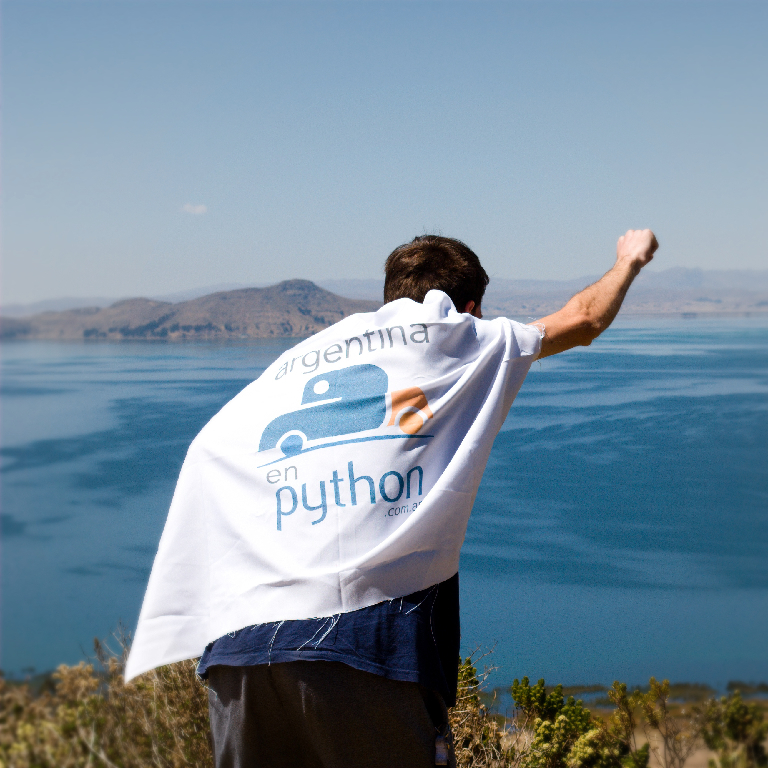

¿Alguna vez soñaste con viajar y trabajar? ¿en dejarlo todo y perseguir tu sueño? ¿o llevar la programación a los lugares más recónditos? En esta keynote hablaré sobre la experiencia de llevar Python a más de 100 ciudades en 8 países de Latinoamérica durante los últimos 3 años. Pequeñas historias, problemas cotidianos, éxitos y fracasos, eventos realizados y la gran comunidad Python a nivel internacional serán los tópicos de esta charla.
Manuel Kaufmann conoció Python, mientras realizaba sus estudios universitarios, en el evento PyDay Santa Fe (Argentina) realizado en 2006 y desde ese día su vida cambió para siempre, literalmente. Se enamoró de su sintaxis y olvidó los punteros y las listas doblemente enlazadas de C hasta estos días. Desde ese momento se ha convertido en miembro activo de Python Argentina.
En estos años, ha participado en la traducción del libro oficial de Django y Tutorial de Django Girls, entre otras. Además, ha trabajado en proyectos como One Laptop Per Child y en febrero de 2016 fue nombrado "Embajador de Python" por la Python Software Foundation por su trabajo con Argentina en Python.
¿Ha cambiado la aproximación de la visión por ordenador y la inteligencia artificial? ¿Cuáles son los casos de uso que puede dar la tecnología de TensorFlow? Gema nos contará en qué consisten las redes neuronales y que aplicaciones tienen, ¡incluyendo demos en directo!
Gema Parreño se licenció en Arquitectura por la Universidad Politécnica de Madrid. Fundó su propia startup de animación 3D y videojuegos y empezó a aprender programación para poder entender los procesos de trabajo de sus compañeros desarrolladores y ayudar a crear productos y aplicaciones. Hace dos años comenzó a estudiar redes neuronales y a programar en Python, y desde entonces ha sido ponente en varios eventos sobre TensorFlow. Está interesada en la ingeniería inversa y "affective computing", que considera el futuro.